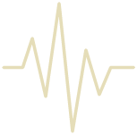

01
Record
Record every key on your piano (A0-C8). Check complete sample guide below.

02
Upload
Upload your samples.
No coding needed.
03
Customize
Add a name, image and a your pianos unique character to your instrument.
04
Generate
We take care of the programming - you get a .dspreset .zip file for DecentSampler.
05
Done
Download your unique piano and start playing in your DAW.
Compatibility
The Unique Piano Generator works with .wav .aiff . flac and .alac
Your Unique Digital Piano are only compatible with DesentSampler.